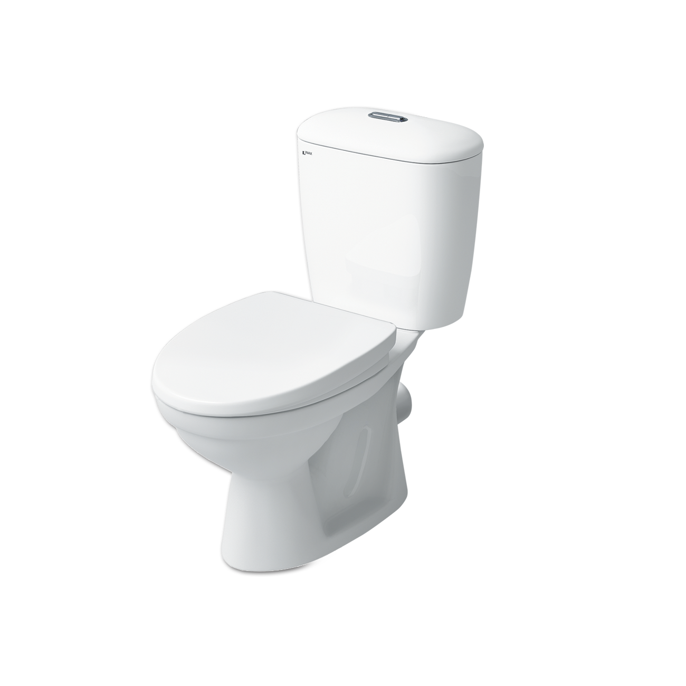
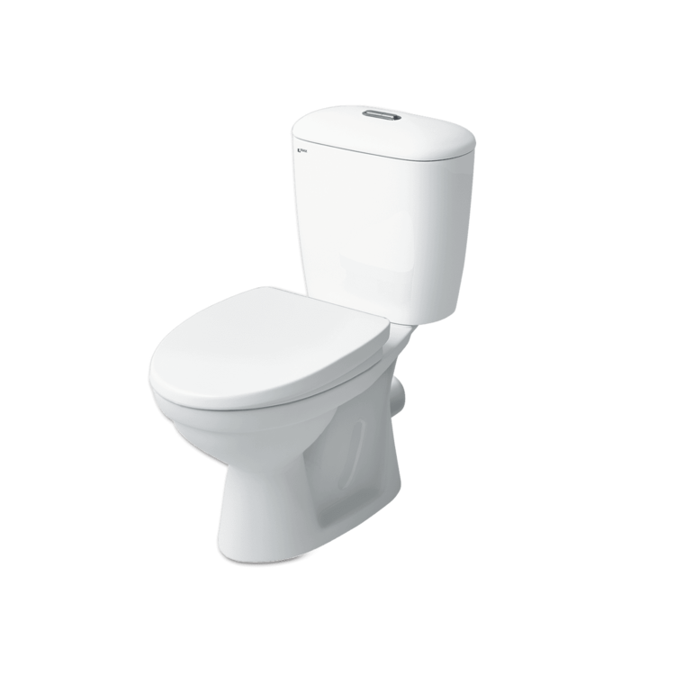
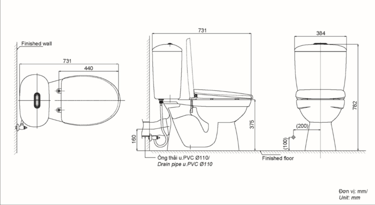

Bồn cầu INAX C-306VPT sở hữu kiểu dáng 2 khối với kích thước tổng thể 774 x 386 x 780 (mm), được thiết kế mới giúp hạn chế bám bẩn và tối ưu không gian phòng tắm có diện tích hạn chế. Với tông màu trắng chủ đạo và thiết kế thoát ngang hiện đại, sản phẩm mang lại vẻ đẹp trang nhã, thanh lịch và giúp việc vệ sinh trở nên dễ dàng, sạch sẽ hơn. Đặc điểm nổi bật của bồn cầu 2 khối C-306VPTNắp đóng thường cứng cáp, đảm bảo độ bền cao và sự chắc chắn trong suốt quá trình sử dụng.Kỹ thuật xả xoáy mạnh mẽ, kết hợp hệ thống xả thẳng giúp tạo lực cuốn tối ưu, xả bay mọi chất bẩn một cách hiệu quả.Hệ thống xả kép siêu tiết kiệm nước với hai mức nhấn riêng biệt: 6.0L cho xả đại và 3.0L cho xả tiểu, giúp người dùng linh hoạt lựa chọn theo nhu cầu.Kiểu thoát ngang đặc trưng, là giải pháp lắp đặt phù hợp cho các cấu trúc nhà tắm có đường ống thoát bồn cầu đi ngang vào tường.Thiết kế mới thông minh, giảm thiểu các góc khuất khó vệ sinh, giúp bề mặt luôn sạch bóng và ngăn ngừa vi khuẩn tích tụ.Để tạo nên không gian phòng tắm đồng bộ và đẳng cấp, khách hàng có thể kết hợp bồn cầu 2 khối INAX C-306VPT với các mẫu chậu rửa lavabo cùng thương hiệu INAX.Video giới thiệu công nghệ Aqua Ceramic độc quyền của INAXBản vẽ bồn cầu 2 khối C-306VPT Xem file hướng dẫn lắp đặt bồn cầu C-306VPTThông số kỹ thuậtChất liệuSứ cao cấpKiểu dáng2 khối, thoát ngang (P-trap)Kích thước774 x 386 x 780 (mm) (Dài x Rộng x Cao)Thương hiệuINAXThiết kế- Nắp đóng thường được thiết kế cứng cáp, bền bỉ theo thời gian - Thiết kế mới trơn láng, dễ dàng vệ sinh và hạn chế tối đa bám bẩn - Kiểu dáng nhỏ gọn, giải pháp hoàn hảo cho phòng tắm có diện tích hẹpTính năng- Hai mức xả nhấn tiết kiệm nước: 6.0L (đại) / 3.0L (tiểu) - Hệ thống xả thẳng kết hợp xả xoáy hiện đại, tạo lực hút mạnh mẽMàu sắcTrắngKhác- Lưu ý: Sản phẩm chưa bao gồm bộ phụ kiện xả và bộ phụ kiện xả P-trap CF-22H - Hotline tư vấn và bảo hành: 18006633
Bồn cầu 2 khối C-306VPT
Bàn cầu thương hiệu INAX.
Đã cập nhật danh sách yêu thích.
DANH MỤC: Bàn cầu
MÃ SẢN PHẨM: C-306VPT
DEPTH: 774mm
HEIGHT: 780mm
WIDTH: 386mm
Bồn cầu INAX C-306VPT sở hữu kiểu dáng 2 khối với kích thước tổng thể 774 x 386 x 780 (mm), được thiết kế mới giúp hạn chế bám bẩn và tối ưu không gian phòng tắm có diện tích hạn chế. Với tông màu trắng chủ đạo và thiết kế thoát ngang hiện đại, sản phẩm mang lại vẻ đẹp trang nhã, thanh lịch và giúp việc vệ sinh trở nên dễ dàng, sạch sẽ hơn. Đặc điểm nổi bật của bồn cầu 2 khối C-306VPTNắp đóng thường cứng cáp, đảm bảo độ bền cao và sự chắc chắn trong suốt quá trình sử dụng.Kỹ thuật xả xoáy mạnh mẽ, kết hợp hệ thống xả thẳng giúp tạo lực cuốn tối ưu, xả bay mọi chất bẩn một cách hiệu quả.Hệ thống xả kép siêu tiết kiệm nước với hai mức nhấn riêng biệt: 6.0L cho xả đại và 3.0L cho xả tiểu, giúp người dùng linh hoạt lựa chọn theo nhu cầu.Kiểu thoát ngang đặc trưng, là giải pháp lắp đặt phù hợp cho các cấu trúc nhà tắm có đường ống thoát bồn cầu đi ngang vào tường.Thiết kế mới thông minh, giảm thiểu các góc khuất khó vệ sinh, giúp bề mặt luôn sạch bóng và ngăn ngừa vi khuẩn tích tụ.Để tạo nên không gian phòng tắm đồng bộ và đẳng cấp, khách hàng có thể kết hợp bồn cầu 2 khối INAX C-306VPT với các mẫu chậu rửa lavabo cùng thương hiệu INAX.Video giới thiệu công nghệ Aqua Ceramic độc quyền của INAXBản vẽ bồn cầu 2 khối C-306VPT Xem file hướng dẫn lắp đặt bồn cầu C-306VPTThông số kỹ thuậtChất liệuSứ cao cấpKiểu dáng2 khối, thoát ngang (P-trap)Kích thước774 x 386 x 780 (mm) (Dài x Rộng x Cao)Thương hiệuINAXThiết kế- Nắp đóng thường được thiết kế cứng cáp, bền bỉ theo thời gian - Thiết kế mới trơn láng, dễ dàng vệ sinh và hạn chế tối đa bám bẩn - Kiểu dáng nhỏ gọn, giải pháp hoàn hảo cho phòng tắm có diện tích hẹpTính năng- Hai mức xả nhấn tiết kiệm nước: 6.0L (đại) / 3.0L (tiểu) - Hệ thống xả thẳng kết hợp xả xoáy hiện đại, tạo lực hút mạnh mẽMàu sắcTrắngKhác- Lưu ý: Sản phẩm chưa bao gồm bộ phụ kiện xả và bộ phụ kiện xả P-trap CF-22H - Hotline tư vấn và bảo hành: 18006633
DANH MỤC: Bàn cầu
MÃ SẢN PHẨM: C-306VPT
DEPTH: 774mm
HEIGHT: 780mm
WIDTH: 386mm